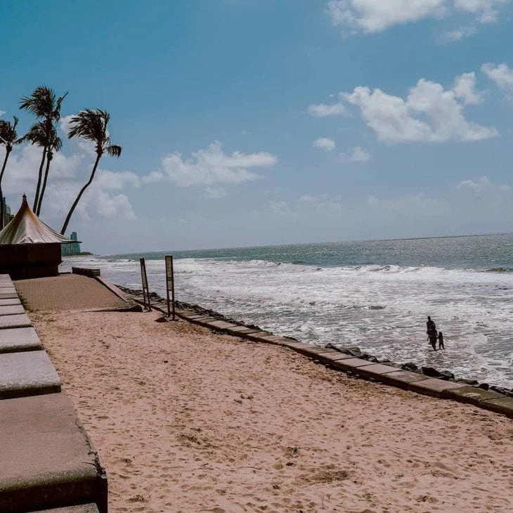
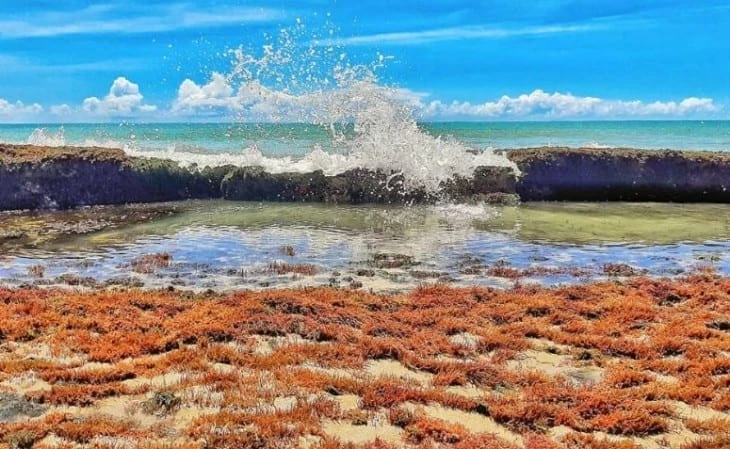

Praia de Boa Viagem: visite o mais efervescente ponto turístico do Recife
A Praia de Boa Viagem é a mais famosa do Recife e uma das mais belas praias de Pernambuco. Localizado no bairro homônimo, o ilustre ponto turístico conecta a Praia do Pina à Praia de Piedade e tem orla de aproximadamente 7 km de extensão. Veja como vale a pena conhecer esse belíssimo e ensolarado atrativo.
O que você precisa saber sobre a Praia de Boa Viagem
A Praia de Boa Viagem fica a apenas 5 km do Aeroporto Internacional do Recife e está situada no bairro mais famoso da cidade, então há bons hotéis e pousadas por perto. O local ganhou fama em razão de ataques de tubarões ocorridos nas últimas décadas. Para curtir com tranquilidade, prefira entrar no mar em dias de maré baixa, quando os recifes de corais formam uma barreira protetora na água.

O que fazer por lá?
Nadar nas piscinas naturais
Ainda que seja urbana e contornada por arranha-céus, a Praia de Boa Viagem contempla um clima relaxante e admiráveis paisagens naturais. Além de proporcionar segurança, as piscinas naturais formadas em maré baixa contam com águas claras, quentinhas e ótimas para nadar. Ou seja, ambiente superindicado para crianças e todos que não gostam de ondas fortes.

Petiscar nas barracas de praia e quiosques
Entre um mergulho e outro nas piscinas naturais, o visitante tem a oportunidade de se sentar em barracas de praias e quiosques estruturados para petiscar e tomar uma bebida. Caso a ideia seja almoçar em um local mais sofisticado quando sair da praia, saiba que o bairro Boa Viagem conta com restaurantes de alto nível.